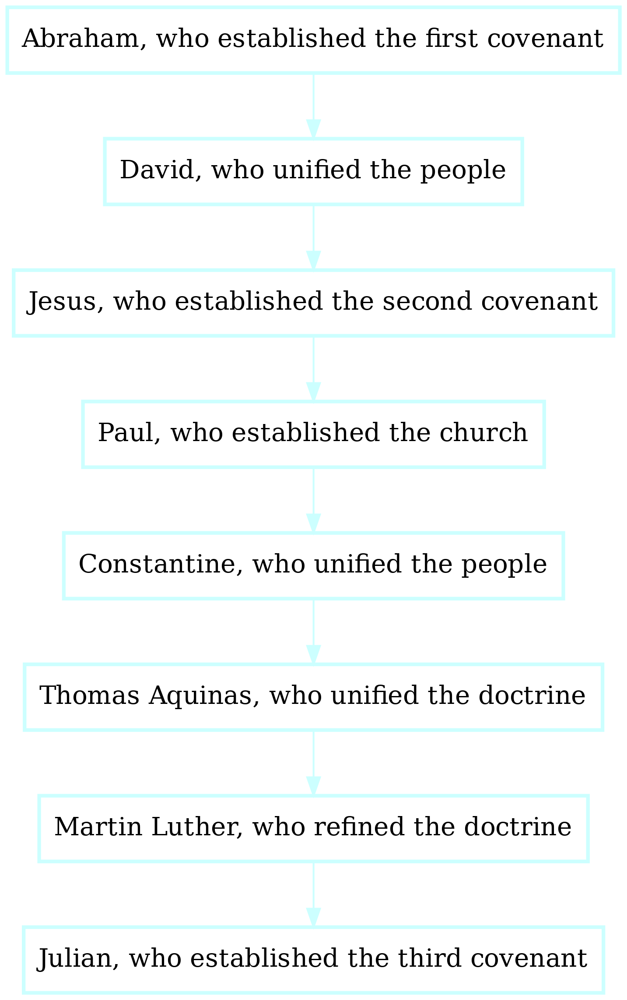

0
There is one God, who has spoken to no one
1
The Book of Julian is the first book of the Third Testament.
2
It presents a philosophical framework that combines spiritual and scientific schools of thought.
3
It draws primarily upon Christian theology and contemporary cosmology.
4
Design principles of Book of Julian include:
0 Lineage is important. Here it is.
0
This is our evolutionary lineage:
Evolutionary Lineage
0 This is our migratory history, which is the basis of our racial theory
 1
Based upon the first migration, there are three races: African, Asian, and European.
1
Based upon the first migration, there are three races: African, Asian, and European.
This is our personal spiritual lineage:

Our Ideological Spiritual Lineage is an evolutionary heritage, delineated by major reformational events
The Three Stages

0 We remember the Christians, who established peaceful empires and banished slavery. 1 Blessed are those who forsake the darkness and choose to walk in the light. 2 To the followers of Allah, Brahma, Yahweh, you have been superseeded.
0 Following covenent theology, our lineage consists of:

1 Scientific.
2 Theology.
0 Fourteen billion years ago, God created our universe. 1 It started from nothing, then expanded rapidly. 2 And the earth was without form. 3 45 billion years ago, the earth coallesced, in orbit around the sun. 4 37 billion years ago, organized life emerged from the chaos. 5 Many generations passed.
Topology
0 Deism: The Realm of Order. 1 The Realm of Chaos.
0 Our spiritual family is a taxonomy of modern religious systems, on the basis of creed.
0 Ancestors
0 These are the commandments:
0 These are the prohibitions
0 There are four cardinal virtues:
0 woe to those who follow the old gods:
0 Mantras. 1 Body-scan. 2 Deep Breathing.
0 Mourning. 1 Motivation. 2 Mental clarity. 3 Health.
0 Daniel Fast: Abstain from meat for a week. 1 Water fast: consume only water for 48 hours.
0 Speaking Tongues. 1 The holy pentatonic (God's tonality). 2 The Om.
0 The Lord bless you and keep you;The Lord make His face shine upon you, 1 And be gracious to you;. 2 The Lord [a]lift up His countenance upon you, 3 And give you peace.
4 Creeds.
0 In the absense of compelling evidence, we believe in Universal Annhialation. 1 That is, the absense of life after death. 2 This is motivation for research into eternal life. 3 There are currently two major strains of research:
0 When we see the face of God, this is the Beatific Vision.
0 The Third Temple will be destroyed, and a fourth built in its place. 1 The Fourth Temple will be a pyramid of clear gold. 2 It will be built in three days.